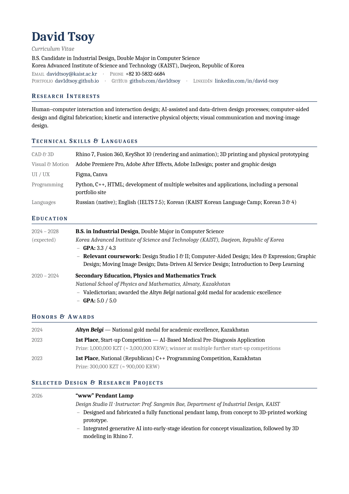
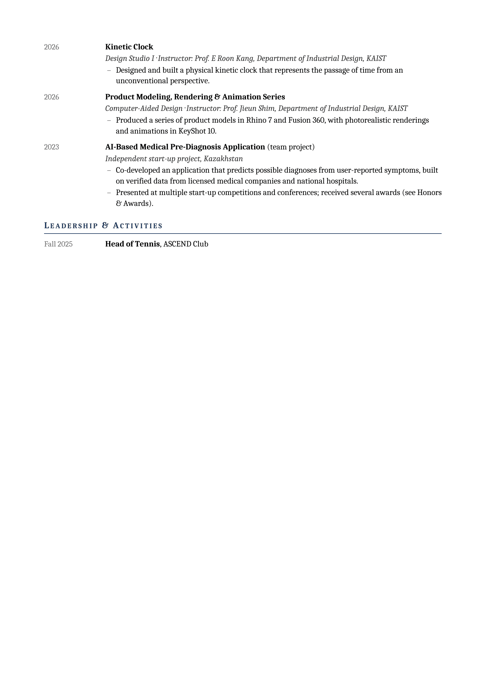

Curriculum Vitae · 2026 · 2 pages
CurriculumVitae
B.S. candidate in Industrial Design with a double major in Computer Science at KAIST, Daejeon.
Page 1 / 2Interests · Skills · Education · Awards

Page 2 / 2Projects · Leadership
